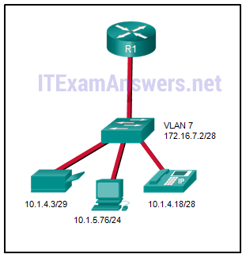

1.¿Cuáles son los tres beneficios principales del uso de VLAN? (Elige tres.)
- seguridad *
- Una reducción en el número de enlaces troncales.
- reducción de costo *
- mejora de la eficiencia del personal de TI *
- @javi__super
2.¿Qué tipo de VLAN se usa para designar qué tráfico está sin etiquetar al cruzar un puerto troncal?
- nativo *
- datos
- defecto
- administración
- @javi__super
3.Un administrador de red está determinando la mejor ubicación de los enlaces troncales de VLAN. ¿Qué dos tipos de conexiones punto a punto utilizan enlaces troncales de VLAN? (Elija dos).
- entre dos conmutadores que utilizan varias VLAN *
- entre un conmutador y un servidor que tiene una NIC 802.1Q *
- entre un interruptor y una impresora de red
- entre dos switches que comparten una VLAN común
- @javi__super
4.¿Qué debe hacer el administrador de red para eliminar el puerto Fast Ethernet fa0 / 1 de la VLAN 2 y asignarlo a la VLAN 3?
- Ingrese el comando switchport access vlan 3 en el modo de configuración de la interfaz. *
- Ingrese los comandos no vlan 2 y vlan 3 en el modo de configuración global.
- Ingrese el comando nativo de conmutación troncal vlan 3 en el modo de configuración de la interfaz.
- Ingrese el comando no shutdown en el modo de configuración de la interfaz para devolverlo a la configuración predeterminada y luego configure el puerto para VLAN 3.
- @javi__super
5.Cuando un conmutador Cisco recibe tramas sin etiquetar en un puerto troncal 802.1Q, ¿a qué ID de VLAN se transfiere el tráfico de manera predeterminada?
- ID de VLAN nativa *
- ID de VLAN no utilizada
- ID de VLAN de datos
- ID de VLAN de gestión
- @javi__super
6.El puerto Fa0 / 11 en un conmutador se asigna a la VLAN 30. Si el comando no switchport access vlan 30 se ingresa en la interfaz Fa0 / 11, ¿qué sucederá?
- El puerto Fa0 / 11 se devolverá a la VLAN 1. *
- El puerto Fa0 / 11 se cerrará.
- Se mostrará un mensaje de error.
- Se eliminará la VLAN 30.
- @javi__super
7.¿Qué comando se usa para eliminar solo la VLAN 20 de un conmutador?
- no vlan 20 *
- eliminar vlan.dat
- borrar flash: vlan.dat
- no hay acceso al switchport vlan 20
- @javi__super
8.¿Qué sucede con un puerto que está asociado con la VLAN 10 cuando el administrador elimina la VLAN 10 del conmutador?
- El puerto se vuelve inactivo. *
- El puerto vuelve a la VLAN predeterminada.
- El puerto se asocia automáticamente con la VLAN nativa.
- El puerto crea de nuevo la VLAN.
- @javi__super
9.¿Qué dos características coinciden con las VLAN de rango extendido? (Escoge dos.)
- Los ID de VLAN existen entre 1006 y 4094. *
- CDP se puede utilizar para aprender y almacenar estas VLAN.
- Se guardan en el archivo de configuración en ejecución por defecto. *
- Se utilizan comúnmente en redes pequeñas.
- @javi__super
10.Un conmutador de Cisco actualmente permite el tráfico etiquetado con las VLAN 10 y 20 a través del puerto troncal Fa0 / 5. ¿Cuál es el efecto de emitir un comando de switchport trunk vlan 30 en Fa0 / 5?
- Solo permite VLAN 30 en Fa0 / 5. *
- Permite VLAN 1 a 30 en Fa0 / 5.
- Permite las VLAN 10, 20 y 30 en Fa0 / 5.
- Permite implementar una VLAN nativa de 30 en Fa0 / 5.
- @javi__super
11.Consulte la presentación. PC-A y PC-B están en VLAN 60. PC-A no puede comunicarse con PC-B. ¿Cuál es el problema?
- La VLAN que utiliza la PC-A no está en la lista de VLAN permitidas en el troncal. *
- El troncal se ha configurado con el comando switchport nongotiate.
- La VLAN nativa se está eliminando del enlace.
- La VLAN nativa debe ser VLAN 60.
- @javi__super

12.Consulte la presentación. DLS1 está conectado a otro conmutador, DLS2, a través de un enlace troncal. Un host que está conectado a DLS1 no puede comunicarse con un host que está conectado a DLS2, aunque ambos están en la VLAN 99. ¿Qué comando debe agregarse a Fa0 / 1 en DLS1 para corregir el problema?
- switchport tronco nativo vlan 66 *
- switchport no negociar
- modo conmutador dinámico automático
- Troncal de conmutación permitida vlan agregar 99
- @javi__super
13.¿Cuál es una característica del enrutamiento entre VLAN heredado?
- El enrutador requiere un enlace Ethernet para cada VLAN. *
- Solo se puede utilizar una VLAN en la topología.
- La VLAN del usuario debe tener el mismo número de ID que la VLAN de administración.
- El enrutamiento entre VLAN se debe realizar en un switch en lugar de un enrutador.
- @javi__super
14.¿Qué cuatro pasos son necesarios para configurar una VLAN de voz en un puerto de switch? (Elija cuatro).
- Configure el puerto del switch en modo de acceso. *
- Agregue una VLAN de voz. *
- Asigne la VLAN de voz al puerto del switch. *
- Asegúrese de que el tráfico de voz sea confiable y esté etiquetado con un valor de prioridad de CoS. *
- @javi__super
15.¿Qué es una desventaja de usar el enrutamiento inter-VLAN del enrutador en un stick?
- no escala más allá de 50 VLAN *
- no admite paquetes etiquetados con VLAN
- requiere el uso de más interfaces físicas que el enrutamiento entre VLAN heredado
- requiere el uso de múltiples interfaces de enrutador configuradas para operar como enlaces de acceso
- @javi__super
16.Consulte la presentación. El enrutador RA recibe un paquete con una dirección de origen de 192.168.1.35 y una dirección de destino de 192.168.1.85. ¿Qué hará el router con este paquete?
- El enrutador reenviará la interfaz de paquetes FastEthernet 0 / 1.2. *
- El router dejará caer el paquete.
- El enrutador reenviará la interfaz de paquetes FastEthernet 0 / 1.1.
- El enrutador reenviará la interfaz de paquete FastEthernet 0 / 1.3.
- @javi__super
17.Consulte la presentación. ¿En qué modo de conmutación se debe asignar el puerto G0 / 1 si se utilizan las mejores prácticas de Cisco?
- el maletero *
- acceso
- nativo
- auto
- @javi__super
18.Una pequeña universidad utiliza VLAN 10 para la red de aula y VLAN 20 para la red de la oficina. ¿Qué se necesita para habilitar la comunicación entre estas dos VLAN mientras se usa el enrutamiento entre VLAN heredado?
- Se debe usar un enrutador con al menos dos interfaces LAN. *
- Se necesitan dos grupos de conmutadores, cada uno con puertos que están configurados para una VLAN.
- Se necesita un enrutador con una interfaz VLAN para conectarse al SVI en un switch.
- Se necesita un conmutador con un puerto que esté configurado como troncal para conectarse a un enrutador.
- @javi__super
19.Consulte la presentación. Un administrador de red debe configurar el router on-a-stick para las redes que se muestran. ¿Cuántas subinterfaces tendrán que crearse en el enrutador si cada VLAN que se muestra debe enrutarse y cada VLAN tiene su propia subinterfaz?
-

- 4 *
- 1
- 2
- 3
- @javi__super
20.Al configurar un enrutador como parte de una topología de enrutamiento entre VLAN de enrutador en una barra, ¿dónde se debe asignar la dirección IP?
- a la subinterfaz *
- a la interfaz
- a la SVI
- a la VLAN
- @javi__super
21.Una escuela secundaria utiliza VLAN15 para la red de laboratorios y VLAN30 para la red de profesores. ¿Qué se requiere para habilitar la comunicación entre estas dos VLAN mientras se usa el enfoque de enrutador en una barra?
- Se necesita un conmutador con un puerto configurado como troncal cuando se conecta al enrutador. *
- Se necesita un interruptor de múltiples capas.
- Se necesita un enrutador con al menos dos interfaces LAN.
- Se necesitan dos grupos de conmutadores, cada uno con puertos que están configurados para una VLAN.
- @javi__super
22.Consulte la presentación. Se implementó una configuración de enrutador en una palanca para las VLAN 15, 30 y 45, de acuerdo con la salida del comando show running-config. Las PC en la VLAN 45 que utilizan la red 172.16.45.0 / 24 tienen problemas para conectarse a las PC en la VLAN 30 en la red 172.16.30.0 / 24. ¿Qué error es más probable que esté causando este problema?
- Hay una dirección IP incorrecta configurada en GigabitEthernet 0 / 0.30. *
- La VLAN incorrecta se ha configurado en GigabitEthernet 0 / 0.45.
- El comando no shutdown falta en GigabitEthernet 0 / 0.30.
- A la interfaz GigabitEthernet 0/0 le falta una dirección IP.
- @javi__super
23.Haga coincidir el campo de la etiqueta VLAN estándar IEEE 802.1Q con las descripciones. (No se utilizan todas las opciones.)
- Pregunta
- Respuesta
- @javi__super
24.Rellena el espacio en blanco. Usa la sintaxis completa del comando.
- El comando show vlan * muestra la asignación de VLAN para todos los puertos, así como las VLAN existentes en el conmutador.
- @javi__super
25.Abra la actividad PT. Realice las tareas en las instrucciones de la actividad y luego responda la pregunta. ¿Qué PC recibirán la transmisión enviada por PC-C?
- PC-D, PC-E *
- PC-A, PC-B, PC-E
- PC-A, PC-B, PC-D, PC-E, PC-F
- PC-A, PC-B
- @javi__super